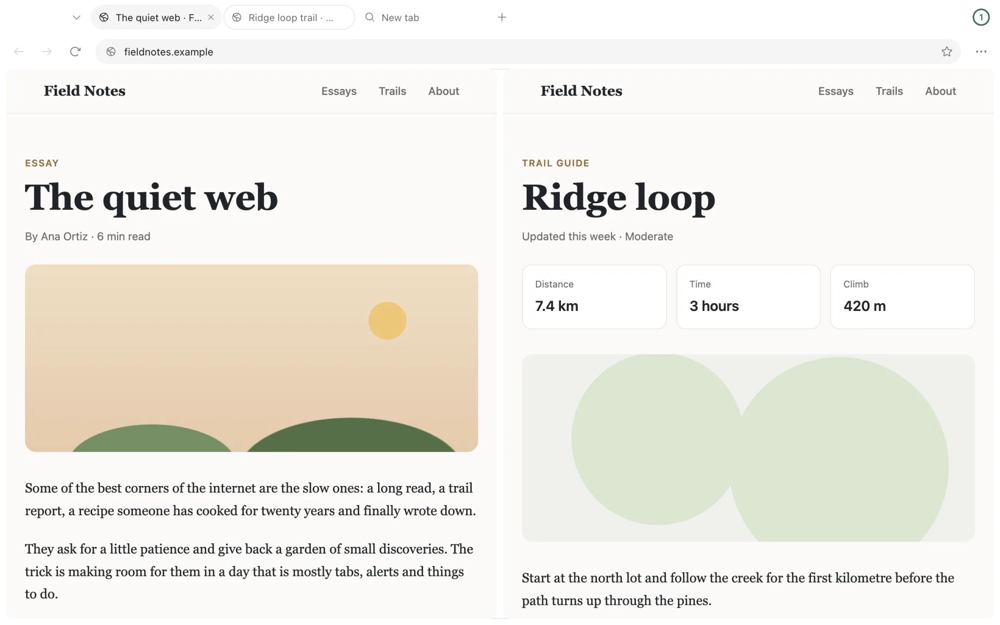

Kamapathy for Android · Coming to Google Play
A calm browser for your phone.
Pair it with Kamapathy on your computer to send tabs both ways, straight over your own Wi-Fi.
See how pairing worksA browser first.
It works on its own, paired or not, and it is laid out like Kamapathy on your computer.
Tabs across the top
Switch tabs with one tap, as on your computer. The tabs sheet lists every tab by space.
One address bar
Type an address or a search. Suggestions come from your own history, bookmarks and tabs, and nothing you type leaves your phone until you submit it.
Spaces with their own sign-ins
Keep work and home apart. A space can share sign-ins with the others or keep its own cookies and site data.
Bookmarks, history and downloads
All in the Library. Downloads go to your phone's Downloads folder.
Find in page
Find a word on the page you are reading and step through every match.
Light and dark
Follow your phone or pick one. Pages with a dark look of their own follow along.
Your password manager
Android's autofill lets your password manager fill sign-ins. Kamapathy keeps no passwords of its own.
Sites ask first
A site asks before it uses your camera, microphone or location, and you can remove each answer in Settings.
Pair once with your computer.
Your phone482 913
Your computer482 913
How to pair
- In Kamapathy on your computer, open Settings, choose Pair a phone under Phone, then Show code.
- Scan the code with Kamapathy on your phone, or with your phone's camera.
- Check that both screens show the same six-digit number, then choose Pair on each.
Send tabs either way
Send a page from the menu, or press and hold a tab or link. On your computer, the phone button sits beside the star. Tabs from your computer arrive when you open Kamapathy on your phone.
See each other's tabs
Your computer's open tabs appear on your phone under its name, and your phone's appear on your computer.
Continue from your computer
Open Kamapathy on your phone and it can offer the page you were just reading on your computer.
Open your computer's local pages
A site you are building on localhost loads on your phone through your computer: the pages you send, and the ones you allow when your phone asks.
No account. No ads. No telemetry.
Tabs go straight between your phone and your computer over your Wi-Fi, encrypted, with no server in between. We receive nothing from the app: not your browsing, not your tabs, not a crash report.
- Checked on both screens
- Pairing goes ahead only when both screens show the same number and you confirm on each.
- Safe Browsing, with a switch
- Android System WebView checks the pages you open with Google Safe Browsing. You can turn it off in Settings.
- Agents stay on your computer
- Agents in Kamapathy can't send tabs to your phone or read its tabs, and tabs in spaces an agent can use stay off your phone's list.
Kamapathy on your computer.
Kamapathy for macOS, Windows and Linux is free and open source. Sending tabs needs version 0.4.0 or later, on the same Wi-Fi as your phone.
Get Kamapathy for your computer
Before you start.
When can I get it?
Kamapathy for Android is being prepared for Google Play. This page will link to it once it is available.
What do I need?
A phone with Android 10 or later. To send tabs, Kamapathy 0.4.0 or later on macOS, Windows or Linux, from kamapathy.app, on the same Wi-Fi as your phone.
Do I need an account?
No. Kamapathy has no account and no sign-in of its own. You pair once, with the code your computer shows.
When do tabs from my computer arrive?
When you open Kamapathy on your phone. Your computer keeps them for up to 7 days. Tabs you send from your phone go at once when your computer is reachable, and otherwise wait on your phone.
What if my phone can't reach my computer?
Kamapathy has to be open on your computer, with both devices on the same Wi-Fi. Guest networks, VPNs and firewalls can keep devices apart. Your computer can also join your phone's hotspot.
Can I pair more than one phone?
Yes. A computer can pair with up to four phones, and each phone pairs with one computer at a time.
Why does it ask me to update Android System WebView?
Kamapathy shows pages with Android System WebView. Spaces with their own sign-ins and your computer's local pages need a recent version, and Kamapathy offers Update when yours is too old.